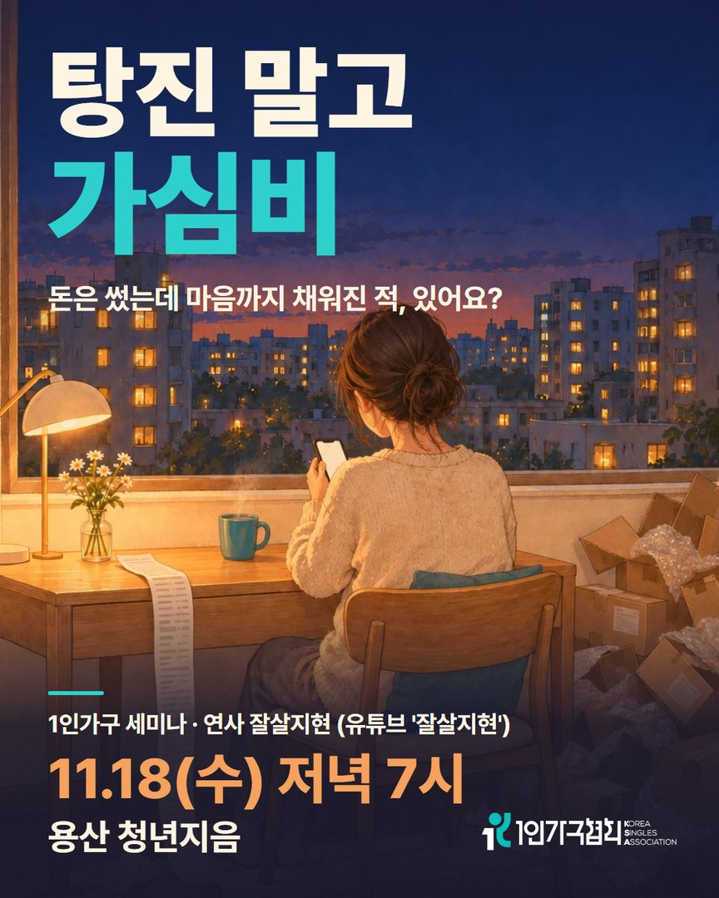
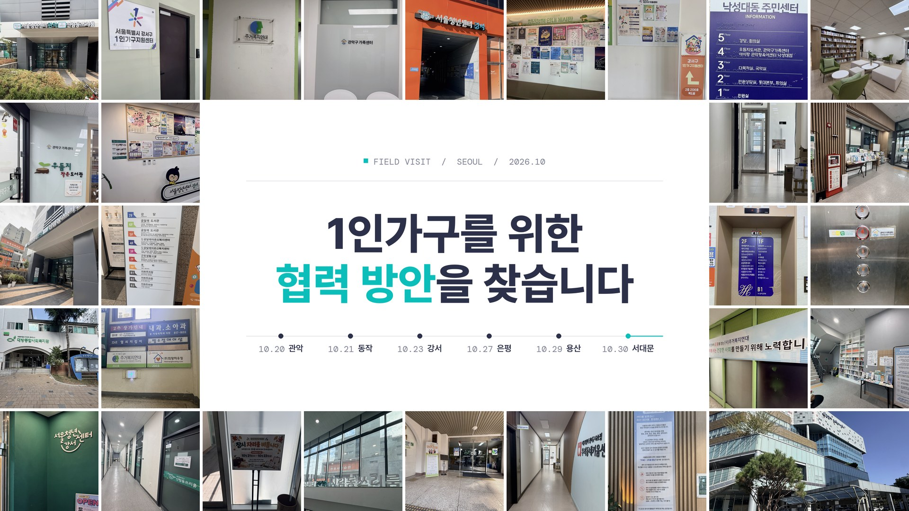

|
|
|
제20호 · 2026.11.03(화)
혼자 사는 삶을 위한
한 주의 정책·생활 소식
11월 세미나 신청 · 기관방문 소식 · 협회 인스타그램 · 1인가구 소식 4건
|
|
안녕하세요, 회원 여러분. 어느덧 11월입니다. 이번 KSA WEEKLY 제20호에는 11월 18일(수)에 열리는 11월 1인가구 세미나 신청 안내를 담았습니다. 1인가구 협력 방안을 찾아 이어 가고 있는 기관방문 소식과 협회 인스타그램 안내, 지난주 1인가구 소식 네 건도 함께 전합니다. 아침저녁 기온이 많이 내려갔습니다. 따뜻하게 챙겨 입으시기 바랍니다.
|
|
11월 1인가구 세미나 · 신청 접수 중
〈내 통장은 왜 늘 비어 있을까〉 탕진 말고 가심비
나를 채우는 소비 vs 새어 나가는 소비, 내 가심비 기준 찾기

|
일시 2026. 11. 18(수) 저녁 7시~9시
장소 용산 청년지음 커뮤니티홀 (서울 용산구 서빙고로 17)
연사 잘살지현 (유튜브 ‘잘살지현’)
대상 20~50대 1인가구, 선착순 30명
참가비 회원 무료 (비회원 3만 원)
진행 강의 대신 참가자들이 소비 경험을 편하게 나누는 대화형 세미나입니다. 10월 1회에 오지 않으셨어도 누구나 참여하실 수 있습니다.
함께하는 곳 용산 청년지음 ‘지음콜라보’ 사업과 협력해 진행합니다.
|
선착순 30명 · 문의 02-2635-9076
|
|
협회 동향

기관방문을 이어 가며 1인가구 협력 방안을 논의하고 있습니다
KSA 1인가구협회는 10월부터 서울 곳곳의 1인가구 관련 기관을 직접 찾아가고 있습니다. 지난주에도 1인가구지원센터와 서울청년센터, 고립·은둔 청년 지원 기관, 중장년 지원 기관, 주거 지원 단체 등 아홉 곳을 찾아갔습니다. 기관마다 1인가구에게 꼭 필요한 지원이 무엇인지 함께 짚어 보고, 1인가구를 위한 협력 방안을 찾아 논의하고 있습니다.
이 논의를 바탕으로 협회는 1인가구 포럼을 기획하고 있습니다. 방문한 각 기관, 국회 의원실과 함께 포럼을 논의하고 있습니다. 1인가구의 권리 증진과 사회적 인식 전환이 필요하기 때문입니다. 협회의 걸음에 많은 응원 부탁드립니다.
협회 인스타그램에서 세미나 소식과 영상을 전합니다
협회 인스타그램에서 매달 여는 1인가구 세미나 소식과 1인가구 이야기를 담은 짧은 영상을 꾸준히 전하고 있습니다. 11월 세미나 신청 링크도 프로필에서 바로 열 수 있습니다. 팔로우해 주시면 새 소식을 놓치지 않고 받아 보실 수 있습니다.
|
|
|
지난주 1인가구 소식 · 10/28~11/2
|
① 혼자 사는 집 안부확인 서비스, 서울·경기 신청 방법 정리
갑자기 아프거나 연락이 끊겼을 때를 대비해 지역별 안부확인 서비스와 신청 창구를 정리했습니다.
블로그에서 전문 보기 ›
|
② 고향사랑기부금, 경남 1인가구 온앤온 남해·함안 지원 사례
남해군은 생활공간 정돈과 생활 물품을, 함안군은 직장인 1인가구의 요리·정리수납 교육을 지원했습니다.
블로그에서 전문 보기 ›
|
③ 1,027만 세대 시대 주민등록 등본 표기가 바뀌었다
10월 29일부터 등·초본의 가족 관계가 세대원과 동거인으로 표시됩니다.
정책브리핑(행정안전부) 기사 보기 ›
|
④ 빚 상담은 이제 1375 한 번호로
10월 29일 개통한 채무상담 대표번호 1375에서 채무조정과 복지 연계까지 안내받을 수 있습니다.
정책브리핑 기사 보기 ›
신용회복위원회 홈페이지 ›
|
|
▶️ KSA 1인가구협회 유튜브
협회 소식을 영상으로도 전합니다
세미나 현장을 담은 쇼츠, 1인가구 현안에 대한 협회의 입장, 생활에 도움이 되는 팁 영상을 꾸준히 올리고 있습니다. 구독과 좋아요가 협회 활동에 큰 힘이 됩니다.
채널 주소: 유튜브에서 ‘KSA 1인가구협회’ 검색
|
|
|
더 많은 1인가구 소식은 협회 홈페이지에서 보실 수 있습니다.
|
|
|
KSA 1인가구협회 (Korea Small Household Association)
홈페이지 ksaofficial.co.kr · T. 02-2635-9076 · 본 메일은 협회 회원님께 발송되는 주간 소식지입니다.
※ 게재 정보는 발행 시점 기준이며 실제 일정·혜택은 변경될 수 있습니다.
문의하기 · info.ksaofficial@gmail.com
더 이상 소식을 받고 싶지 않으시면 수신거부 하실 수 있습니다.
|